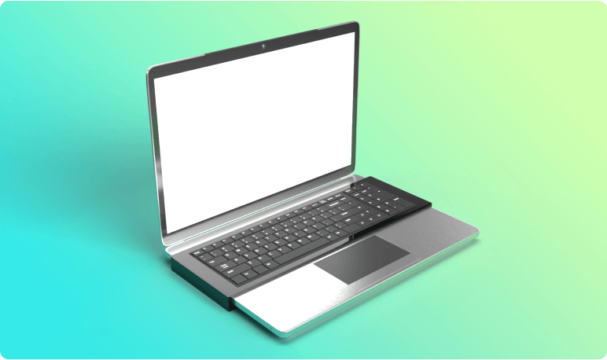
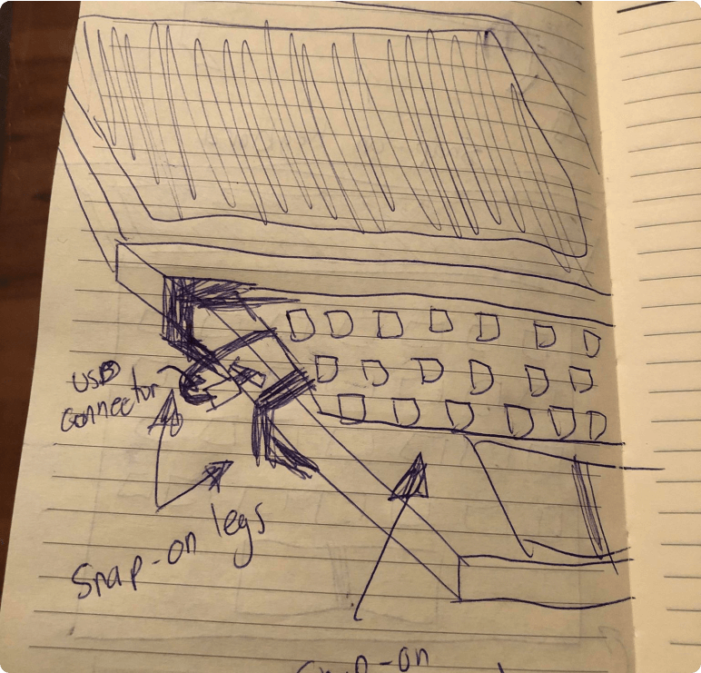

Accessiboard
2019

Keyboards come in a variety of shapes and styles. There’s gaming keyboards that feature fast switches to prioritize responsiveness, ergonomic keyboards that feature eccentric shapes to prioritize user comfort, and even accessible keyboards to prioritize user inclusion.
The main issue related to all of these cool features is choice. While traditional desktop computers allow you to pick and choose from different peripheral devices, laptops are an all-in-one machine, meaning the keyboard cannot be removed. Accessiboard seeks to solve this issue by creating a portable snap-on accessory that allows the user to quickly swap between keyboard types.
My initial thoughts for Accessiboard came in the design of a laptop fitted with the ability to hot-swap between keyboards. Users would be able to effortlessly remove and connect different keyboards to their laptops in a matter of seconds, all without the need to shut down their machine.
This design created a seamless experience, even allowing for native support to remove the keyboard right from the operating system.
While my initial designs created a seamless ecosystem for inclusive laptop keyboards, it did not solve the issue with those who already owned laptops. Because my design incorporated a new laptop design, users would need to purchase a brand-new laptop.
With this issue in mind, I began to think of ways I could keep my current solution while also keeping into account those who already own laptop computers. I then came to the conclusion that a snap-on laptop attachment was the way to go.
My final design fosters both inclusion and diversity by ensuring availability and use to all groups of users. Accessiboard features a device that snaps onto the user’s laptop. Users then choose the type of keyboard they want, connect it to Accessiboard, and the operating system instantly recognizes the keyboard.
By creating a design that clips onto the user’s current device, it allows for a more inclusive experience for all users. It also allows for users to select a laptop they want, rather than having to buy a specific laptop with an interchangeable keyboard.